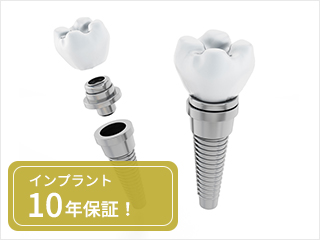
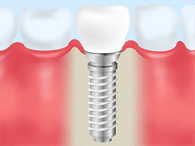
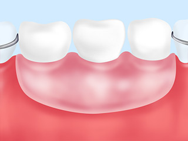
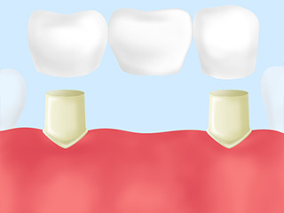
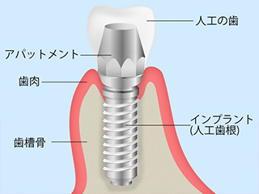
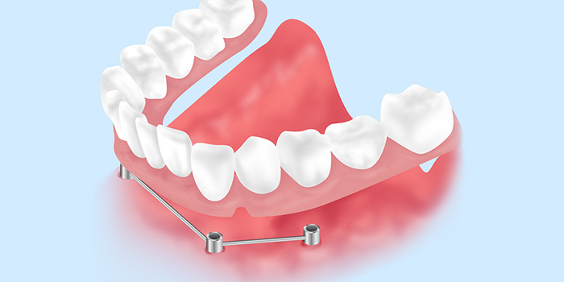
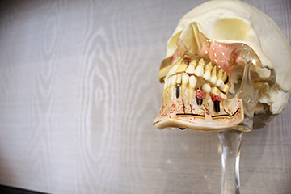
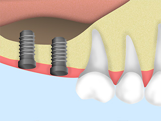
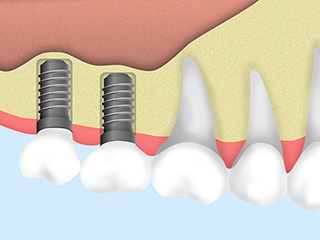
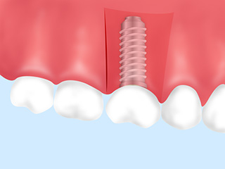

- ホーム
- インプラント治療｜インプラント治療とは
Implant失った歯の機能回復のための治療です～インプラント治療～

歯を失ってしまったら、そのまま放置してはいけません。お口のバランスがくずれ、お口全体の健康に悪影響を与えてしまう可能性があります。渋谷駅すぐの歯医者「渋谷ルーブル歯科・矯正歯科」にお早めにご相談ください。こちらでは失った歯の機能回復のための治療の一つ、インプラント治療についてご説明します。
歯が抜けたまま放置すると生じるリスク
※表は左右にスクロールして確認することができます。
| お口の中での悪影響 | 全身への悪影響 |
|---|---|
|
|
ブリッジ・入れ歯治療との比較
失った歯の機能回復の治療はおもに3つです。それは、人工歯根を埋め込む「インプラント治療」、取り外し可能な「入れ歯治療」、そしてとなりの歯を削って支台にして連結した歯を装着する「ブリッジ治療」です。それぞれにメリットとデメリットがありますので、患者様に合った治療を選ぶことが大切です。
※表は左右にスクロールして確認することができます。
| インプラント治療 | 入れ歯治療 | ブリッジ治療 |
|---|---|---|
 |
 |
 |
【メリット】
|
【メリット】
|
【メリット】
|
【デメリット】
|
【デメリット】
|
【デメリット】
|
渋谷ルーブル歯科・矯正歯科のインプラント治療
インプラント手術にはいくつかの種類があります。患者様のお口の状態や、選択したインプラントによって患者様に合った治療方法を選択することが大切です。
手術回数が1回で済む「抜歯即時埋入法」

通常のインプラント治療は、まず1回目の手術でインプラント体を顎の骨に埋め込み、安定するのを待ってから、ふたたび手術をおこない、インプラント体と上部構造の被せ物をつなぐアバットメントを装着します。つまり2回の外科手術をおこないます。そのあとで歯肉の治癒をみて、被せ物を装着するのです。
これに対して、1回の手術でインプラント体を埋め込むのが「抜歯即時埋入法」です。歯や顎の骨の状態によっては、1回の手術で治療可能なので、患者様への負担が少なくて済みます。この手術ができるかどうかは、まず精密検査によって診断します。
多くの歯を失った方のための「All-on-4（オールオンフォー）」

歯をすべて失った場合、これまでは8～14本のインプラントを埋入しなければなりませんでした。しかし新しい技術の開発により、4本のインプラントに特殊な入れ歯のような人工歯を装着して全部の歯を補うことが可能になりました。それが「All-on-4」です。
しっかり安定するので通常の入れ歯よりもしっかり噛めるうえ、インプラントの本数が少なくて済むので、たくさんのインプラントを使うよりも費用を抑えられ、患者様の身体的負担も抑えられます。
骨が足りずにインプラント治療を断られた方へ

インプラントは顎の骨に埋め込むので、そのために十分な骨の量と密度が必要です。顎の骨が足りない場合、他院では治療を断られてしまうことがありますが、当院では、まず骨の量を増やしてからインプラント治療をおこないます。それが骨再生療法です。顎の骨の状態や治療部位によりさまざまな再生療法があります。
サイナスリフト
 |
上の顎の奥歯部分の顎の骨が足りない場合、横から歯ぐきに穴を開けて、骨補填材などを注入して骨の量や厚みを確保します。 |
ソケットリフト
 |
上の顎の奥歯部分の顎の骨が足りない場合、インプラントを埋入する穴から骨補填材などを注入して骨の厚みを確保します。インプラント埋入手術と同時におこなうこともあります。 |
GBR
 |
下の顎の骨が足りない場合に、骨補填材や人工骨または自家骨（自分の骨を砕いた物）を移植して骨の再生をはかります。 |
PRP
血液を採取して遠心分離器にかけて、血小板を濃縮し、治療効果を高めて顎の骨の欠損部分に移植する方法です。PRPは血小版血漿のことです。